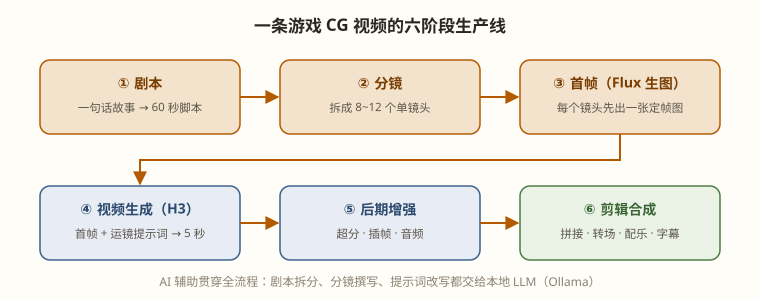

六阶段生产线总览：为什么专业玩家都"先定帧、再动画"
新手做 AI 视频的典型路径是：打开视频模型 → 写一句提示词 → 抽卡 → 不满意 → 改提示词 → 再抽卡。这个过程的痛苦之处在于每次抽卡都要付出完整的视频生成时间（在 16GB 显卡上是半小时级别），而画面构成、角色长相、场景布局这些本该在前期定死的东西，全被交给了运气。
专业流程把"创意决策"和"算力消耗"分开了：便宜的环节做决策，昂贵的环节只执行。

把故事切成 8~12 个单镜头，每个镜头写清楚：画面里有什么、镜头怎么动、什么情绪。这一阶段全部可以用本地 LLM（Ollama + qwen3:8b）辅助完成——详见第 3、4 章。在这里改一版文案的成本是几秒钟，在视频生成后改的成本是半小时，所以前期抠得越细，后期越省。
每个镜头先用 Flux 生成一张"定帧图"。图像模型比视频模型便宜两个数量级，可以放肆抽卡：一个镜头抽 4~8 张首帧，挑出构图、角色、光影最满意的一张。这一步相当于传统影视的概念设计 + 美术定稿。
首帧接入视频模型的 first_frame 输入，提示词只描述"运动和运镜"。因为画面内容已被首帧锁死，视频模型只需要做好一件事：让这张画正确地动起来。废片率从纯文生视频的 70%+ 降到 20% 以下。
超分提清晰度、插帧提流畅度、配音频，最后进剪辑软件拼接。这是"能用"和"能打"的分水岭，PART 04 整篇讲这个。
| 环节 | 单位耗时 | 一个 60 秒项目（10 镜头）总量 | 性质 |
|---|---|---|---|
| 剧本 + 分镜 | — | 1~2 小时（人工+AI） | 创作 |
| 首帧生成 | ~30 秒/张 | ~1 小时（含抽卡挑选） | 创作 |
| 首帧精修（局部重绘） | ~1 分钟/次 | 0.5 小时 | 创作 |
| 视频生成 | ~30 分钟/5 秒 | 5~8 小时（含 20% 重抽） | 算力 |
| 超分 + 插帧 | ~5 分钟/镜 | ~1 小时 | 算力 |
| 剪辑合成 | — | 1~2 小时 | 创作 |
视频生成的 5~8 小时是无人值守时间。合理节奏：白天完成剧本、分镜、首帧并把视频任务全部排队（ComfyUI 支持任务队列），睡前启动，早上起床收片。第 20 章会讲如何用 API 把排队也自动化。
纯文生视频（T2V）把三件事同时交给模型碰运气：画面里有什么（构图/角色/场景）、画面怎么动（运动/运镜）、动得稳不稳（一致性）。首帧策略把第一件事完全拿走——图像模型的画面质量远高于视频模型直接生成的首帧，且可以人工挑选、局部重绘精修。
这带来三个直接收益：
走法 A（纯 T2V）：提示词直接写"星舰驾驶舱，舰长看蓝色行星，镜头推近"。实测：构图随机（有时俯拍有时仰拍）、舰长服装每次不同、行星位置飘忽。抽 5 条才有一条能用的，耗时 2.5 小时。
走法 B（首帧策略）：Flux 先出 4 张驾驶舱概念图（2 分钟），选定"对称构图、红色制服舰长居中、舷窗右上蓝色行星"的一张；H3 接首帧，提示词只写 "camera slowly pushes in, captain turns toward the viewport"。一次通过，耗时 35 分钟。
结论：B 的画面质量和可控性全面胜出，总耗时反而更短。这就是本书主线流程的全部理由。